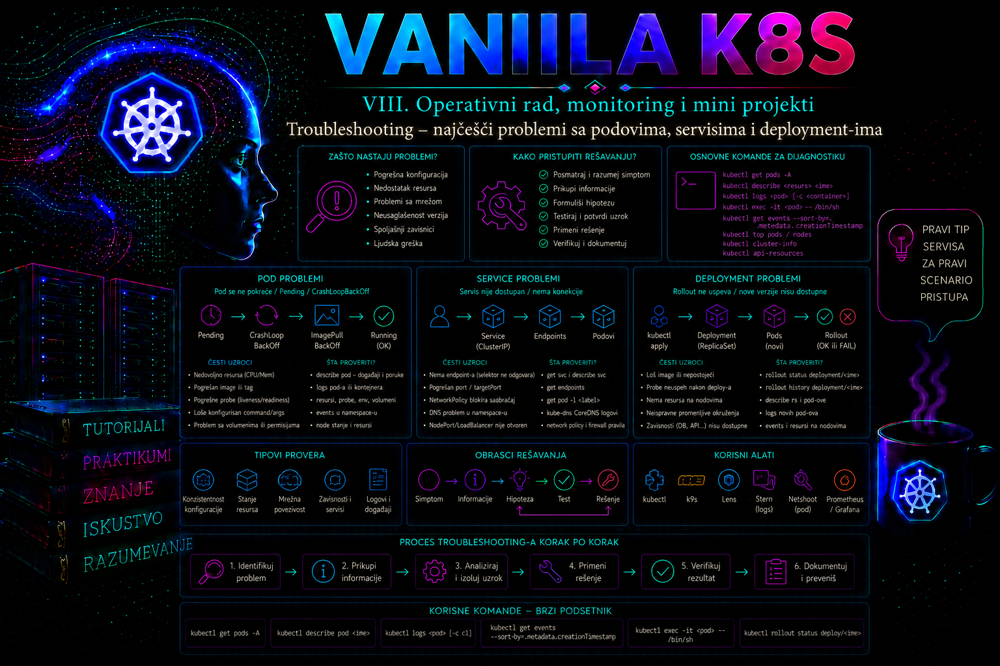

Vanilla Kubernetes

Troubleshooting u Kubernetes okruženju nije nasumično izvršavanje komandi dok problem ne nestane, već kontrolisan proces prikupljanja dokaza, sužavanja uzroka i potvrđivanja da je intervencija otklonila kvar bez stvaranja novih posledica. Administrator mora da razlikuje simptom koji vidi korisnik, stanje Kubernetes objekata, ponašanje aplikacije unutar kontejnera i stanje infrastrukture na kojoj klaster radi. Pod koji nije u stanju Running ne mora nužno biti jedini uzrok prekida, kao što ni svi podovi u stanju Running ne znače da aplikacija zaista prihvata i ispravno obrađuje zahteve.
Najvažniji princip dijagnostike jeste kretanje od spoljnog simptoma ka unutrašnjem uzroku. Najpre se potvrđuje šta ne radi i koliki je uticaj, zatim se proveravaju Deployment, ReplicaSet, podovi, Service, EndpointSlice objekti, DNS, mrežna dostupnost, aplikacioni logovi i, tek kada dokazi to opravdaju, komponente noda ili samog klastera. Promena konfiguracije pre prikupljanja početnog stanja može ukloniti tragove potrebne za analizu i otežati utvrđivanje osnovnog uzroka.
Administratorski model za sistematsku dijagnostiku
Operativni tok ove lekcije može se sažeti kao simptom → obim → dokaz → hipoteza → neposredni uzrok → osnovni uzrok → korekcija → validacija → prevencija. Simptom je ono što korisnik ili monitoring opaža; posledica je uticaj na uslugu; neposredni uzrok je tehnički događaj koji je kvar proizveo; osnovni uzrok objašnjava zašto je taj događaj uopšte bio moguć. Na primer, neposredni uzrok nedostupnosti može biti Service bez spremnih endpointa, dok osnovni uzrok može biti neusklađena promena labela koju CI provera nije otkrila. Privremeno zaobilazno rešenje vraća uslugu, trajna korektivna mera uklanja uzrok, a preventivna mera smanjuje verovatnoću ponavljanja.
| Korak | Administratorsko pitanje | Dokaz da se može dalje |
|---|---|---|
| Simptom i posledica | Šta tačno ne radi i kakav je korisnički ili poslovni uticaj? | Ponovljiv test, alarm ili zahtev sa vremenom i očekivanim rezultatom. |
| Obim | Jedna replika, workload, namespace, node, zona ili ceo klaster? | Poređenje zdravih i pogođenih instanci po istoj osi. |
| Dokazi | Šta su promena, događaji, metrike, logovi i audit trag zabeležili u istom vremenskom prozoru? | Sačuvano početno stanje i vremenska linija bez izmene sistema. |
| Hipoteza i uzrok | Koji nalaz bi hipotezu potvrdio, a koji opovrgao? | Uzrok je reprodukovan ili potvrđen sa najmanje jednim nezavisnim dokazom. |
| Korekcija | Koja najmanja reverzibilna promena vraća željeno stanje? | Odobren plan, procenjen blast radius i poznat rollback. |
| Validacija | Da li je nestao korisnički simptom i da li je sistem stabilan? | Funkcionalni test, stanje kontrolera, metrike i odsustvo novih upozorenja. |
Kubernetes problem treba posmatrati kroz nekoliko povezanih slojeva. Na sloju deklarisanog stanja nalaze se manifesti i objekti poslati API serveru. Na sloju kontrolera proverava se da li Deployment i ReplicaSet uspevaju da približe stvarno stanje željenom. Na sloju poda proveravaju se raspoređivanje, inicijalizacija, povlačenje slike, pokretanje procesa, probe i restartovanja. Na servisnom sloju proveravaju se selektori, portovi i registrovani backend endpointi. Ispod toga nalaze se DNS, mrežni dodatak, kube-proxy ili druga implementacija servisnog prosleđivanja, runtime kontejnera, kubelet, operativni sistem noda i fizička ili virtuelna infrastruktura.
Prvi zadatak administratora nije da odmah pronađe konačni uzrok, već da precizno odredi granicu kvara. Potrebno je utvrditi da li problem pogađa jedan pod, sve replike jednog Deployment-a, jedan namespace, jedan node, određenu zonu ili čitav klaster. Problem koji prati samo jedan pod češće ukazuje na lokalno stanje kontejnera, volumena ili noda. Problem koji prati novu verziju na svim podovima češće ukazuje na image, konfiguraciju ili probe. Problem koji pogađa više nepovezanih aplikacija na istom nodu zahteva proveru noda, runtime-a, mreže i resursa.
Početni pregled treba da bude vremenski ograničen i nedestruktivan. Administrator beleži vreme početka incidenta, prijavljeni simptom, pogođene korisnike, poslednju poznatu ispravnu verziju, nedavne promene i rezultate prvih komandi. Posebno se proverava da li je neposredno pre problema izvršen rollout, izmena ConfigMap ili Secret objekta, promena Service selektora, NetworkPolicy pravila, resursnih ograničenja, storage konfiguracije ili klasterske komponente.
kubectl config current-context
kubectl cluster-info
kubectl get namespace
kubectl get deployment,replicaset,pod,service,endpointslice -n prod-web -o wide
kubectl get events -n prod-web --sort-by=.metadata.creationTimestamp
kubectl rollout status deployment/web-frontend -n prod-web --timeout=30sKomande potvrđuju da administrator radi u očekivanom kontekstu, da API server odgovara i da su ključni objekti vidljivi. Korišćenje pogrešnog konteksta ili namespace-a može proizvesti pogrešan zaključak, ali i dovesti do promene na pogrešnom klasteru. U produkciji je dobra praksa da naziv konteksta, klastera i namespace-a bude deo zapisa incidenta ili change tiketa.
Ove komande su read-only, osim što pristup logovima, objektima i događajima ostavlja trag u audit sistemu ako je audit konfigurisan. Izlaze treba vremenski uskladiti: lokalni sat radne stanice, čvorovi i sistemi za logove moraju koristiti pouzdan izvor vremena. Bez zajedničke vremenske osnove lako se obrne redosled uzroka i posledice. Kubernetes događaji su pomoćni, agregirani zapisi ograničenog zadržavanja; nisu kompletan istorijski dnevnik niti zamena za audit log, metrike i centralizovane logove obrađene u prethodnim lekcijama.
Problemi sa podovima i stanjima kontejnera
Kolona STATUS u izlazu komande kubectl get pods predstavlja sažeti prikaz i nije isto što i faza poda iz API objekta. Detaljno stanje mora se proveriti komandom kubectl describe pod i strukturiranim YAML ili JSON prikazom. Posebno su važni PodScheduled, Initialized, ContainersReady i Ready uslovi, kao i state i lastState svakog kontejnera.
Pod u stanju Pending još nije potpuno pokrenut. Uzrok može biti nemogućnost raspoređivanja zbog nedostatka CPU-a ili memorije, nepodudaranja node selector-a ili affinity pravila, taint-a bez odgovarajućeg toleration-a, nedostupnog PersistentVolume-a ili ograničenja kvote. U odeljku Events komande kubectl describe pod scheduler obično navodi konkretne razloge. Dodavanje većih kapaciteta ili menjanje zahteva bez čitanja tih razloga predstavlja nagađanje, a ne dijagnostiku.
kubectl get pod -n prod-web -o wide
kubectl describe pod web-frontend-POGODJENI_POD -n prod-web
kubectl get pod web-frontend-POGODJENI_POD -n prod-web -o yaml
Stanja ErrImagePull i ImagePullBackOff ukazuju na neuspešno preuzimanje image-a i naknadno odlaganje novih pokušaja. Razlozi uključuju nepostojeći repository ili tag, nedostupni registry, problem sa DNS-om ili TLS-om, ograničenje broja zahteva i neispravan ili nedostupan imagePullSecret. Administrator proverava potpuno ime image-a u pod template-u, događaje poda, postojanje Secret objekta i pravo ServiceAccount-a da ga koristi. Tajni podaci iz Secret objekta ne iznose se u incident tiket niti prikazuju kroz deljene terminalske sesije.
CrashLoopBackOff znači da se proces u kontejneru pokreće, završava ili biva prekinut, a kubelet primenjuje rastući period čekanja pre novog pokušaja. To nije osnovni uzrok, već mehanizam zaštite od neprekidnog brzog restartovanja. Administrator proverava trenutne logove, logove prethodne instance kontejnera, završni kod, signal, razlog prekida i događaje. Opcija --previous je naročito važna kada se trenutna instanca tek pokrenula i još nema relevantne poruke.
kubectl logs pod/web-frontend-POGODJENI_POD -n prod-web -c web --tail=200 --timestamps
kubectl logs pod/web-frontend-POGODJENI_POD -n prod-web -c web --previous --tail=200 --timestamps
kubectl get pod web-frontend-POGODJENI_POD -n prod-web \
-o jsonpath='{range .status.containerStatuses[*]}{.name}{" state="}{.state}{" lastState="}{.lastState}{" restarts="}{.restartCount}{"\n"}{end}'
Izlazni kod 1 obično označava aplikacionu grešku, ali njegovo precizno značenje zavisi od procesa. Kod 137 često znači da je proces dobio signal SIGKILL; čest uzrok je prekoračenje memorijskog limita i stanje OOMKilled, ali zaključak mora biti potvrđen poljem razloga i događajima. Kod 143 odgovara završetku signalom SIGTERM i može biti očekivan tokom kontrolisanog gašenja, rollout-a ili brisanja poda. Sam kod bez vremenskog i operativnog konteksta nije dovoljan dokaz.
Kontejner može biti pokrenut, a pod ipak ne biti spreman za saobraćaj. Neuspešna readiness proba uklanja pod iz skupa spremnih endpointa, ali ga po pravilu ne restartuje. Neuspešna liveness proba može dovesti do restartovanja kontejnera, dok startup proba štiti sporije aplikacije od prerane liveness provere. Administrator proverava putanju, port, protokol, početno kašnjenje, period, timeout i prag neuspeha. Probe moraju proveravati realnu sposobnost aplikacije za određenu svrhu, a ne samo postojanje procesa.
Za image bez shell-a ili dijagnostičkih alata ne treba menjati produkcijski image samo radi istrage. Kada RBAC pravila i bezbednosne politike dozvoljavaju, kubectl debug može dodati privremeni ephemeral container sa alatima. Takva sesija ima bezbednosni značaj jer može omogućiti pristup mrežnom i procesnom prostoru poda; zato se koristi samo uz odobrenje i dokumentuje u incidentu.
kubectl debug -n prod-web -it pod/web-frontend-POGODJENI_POD \
--image=registry.k8s.io/e2e-test-images/agnhost:2.53 \
--target=web -- /bin/shProblemi sa Service objektima i mrežnom putanjom
Service ne pokreće aplikaciju i ne popravlja neispravne podove. On definiše stabilnu virtuelnu adresu i skup portova, dok EndpointSlice objekti povezuju Service sa odgovarajućim backend adresama. Najčešća greška je nepodudaranje Service selektora i labela podova. U tom slučaju Service postoji i DNS ime se može uspešno razrešiti, ali nema endpoint koji može da primi zahtev.
kubectl get service web-frontend -n prod-web -o yaml
kubectl get pod -n prod-web --show-labels
kubectl get endpointslice -n prod-web \
-l kubernetes.io/service-name=web-frontend -o wide
Administrator poredi svaki par ključa i vrednosti iz spec.selector Service objekta sa labelama podova. Zatim proverava da li EndpointSlice sadrži očekivane adrese i da li su endpointi označeni kao spremni. Ručno uređivanje EndpointSlice objekta kojim upravlja kontroler nije trajno rešenje; kontroler će ga ponovo uskladiti sa podovima i Service selektorom.
Druga česta greška je pogrešan odnos između port i targetPort. port je port na kojem se Service izlaže klijentima, dok targetPort označava port aplikacije u podu. Kada je targetPort simboličko ime, ono mora odgovarati imenu porta u specifikaciji kontejnera. Pod može biti spreman, EndpointSlice može sadržati njegovu adresu, a zahtev ipak može biti odbijen zato što aplikacija ne sluša na očekivanom portu ili sluša samo na loopback adresi.
Dijagnostika treba da odvoji četiri pitanja: da li DNS vraća Service adresu, da li je Service dostupan, da li je direktna IP adresa poda dostupna i da li aplikacija odgovara lokalno unutar samog poda. Privremeni dijagnostički pod treba pokrenuti u istom namespace-u i, kada je relevantno, sa istim ServiceAccount-om i pod sličnim NetworkPolicy pravilima kao stvarni klijent.
kubectl run netcheck -n prod-web --rm -it --restart=Never \
--image=registry.k8s.io/e2e-test-images/agnhost:2.53 \
--command -- /bin/sh
U interaktivnoj sesiji mogu se izvršiti nslookup web-frontend, zahtev prema http://web-frontend:80/healthz i zahtev direktno prema IP adresi poda. Ako DNS ne radi, proveravaju se /etc/resolv.conf u podu, DNS politika poda, Service i podovi CoreDNS-a, njihovi logovi i eventualna NetworkPolicy pravila. Ako Service ne radi, ali direktan pristup podu radi, fokus prelazi na selektor, EndpointSlice, portove i servisnu mrežu. Ako ne radi ni direktna adresa poda, proveravaju se aplikacioni port, readiness stanje, NetworkPolicy i CNI.
kubectl port-forward je koristan kao izolacioni test jer omogućava pristup konkretnom podu ili Service objektu kroz kanal do API servera. Uspešan port-forward prema podu potvrđuje da aplikacija sluša na zadatom portu, ali ne potvrđuje ispravnost klasterskog DNS-a, Service prosleđivanja, Ingress-a ili putanje kojom pristupaju korisnici. Zato nije dovoljan kao završna produkciona validacija.
Problemi sa Deployment objektima i rollout-om
Deployment upravlja ReplicaSet objektima i postepenom zamenom podova. Kada rollout ostane nezavršen, administrator proverava željeni, ažurirani, dostupni i nedostupni broj replika, Deployment uslove, novi ReplicaSet i događaje njegovih podova. Problem često nije u samom Deployment kontroleru, već u novom pod template-u: nepostojeći image, neispravna konfiguracija, neuspešna proba, nedovoljni resursi ili zabrana admission politike.
kubectl describe deployment web-frontend -n prod-web
kubectl get replicaset -n prod-web -l app=web-frontend
kubectl rollout history deployment/web-frontend -n prod-web
kubectl rollout status deployment/web-frontend -n prod-web --timeout=60s
Stanje ProgressDeadlineExceeded znači da Deployment nije ostvario napredak unutar konfigurisanog roka. Povećavanje progressDeadlineSeconds može biti opravdano za dokazano sporo pokretanje, ali ne rešava nepostojeći image ili neispravnu readiness probu. Pre izmene administrator mora da utvrdi da li je rok realno prekratak ili samo prikriva kvar.
Rollback komandom kubectl rollout undo vraća pod template na prethodnu reviziju, ali ne vraća automatski sve spoljne zavisnosti. Posebno se moraju razmotriti migracije baze podataka, promenjene Secret ili ConfigMap vrednosti, izmene persistentnih podataka, eksterni API ugovori i ručno promenjeni objekti. Rollback je bezbedan tek kada je potvrđeno da je prethodna aplikaciona verzija kompatibilna sa trenutnim stanjem podataka i okruženja.
Nije preporučljivo nasumično brisati podove u nadi da će problem nestati. Kontroler će napraviti zamenu sa istim neispravnim template-om, dok se mogu izgubiti prethodni logovi sa noda i vremenski tragovi. Brisanje pojedinačnog poda ima smisla kada je dokazano da je problem vezan za lokalno prolazno stanje instance ili noda, a ne za deklarisanu konfiguraciju. Pre toga treba sačuvati describe, događaje, trenutne i prethodne logove i relevantne metrike.
Kada istragu proširiti na node i kontrolnu ravan
Istraga prelazi sa workload-a na node kada više nepovezanih podova na istom nodu pokazuje slične simptome, node ima uslov Ready=False ili Unknown, rastu evikcije ili se pojavljuju MemoryPressure, DiskPressure, PIDPressure i runtime greške. Prvi koraci ostaju nedestruktivni: pregled uslova, događaja, alociranih resursa i poređenje sa zdravim nodom. kubectl top zahteva Metrics API i prikazuje trenutnu potrošnju, ne istorijski uzrok; zato se povezuje sa monitoring sistemom.
kubectl get nodes -o wide
kubectl describe node POGODJENI_NODE
kubectl get events --all-namespaces --field-selector involvedObject.kind=Node \
--sort-by=.metadata.creationTimestamp
kubectl top node POGODJENI_NODE
kubectl get pods --all-namespaces --field-selector spec.nodeName=POGODJENI_NODE -o wide
Na nodu zasnovanom na systemd-u ovlašćeni administrator zatim može čitati journalctl -u kubelet i log odgovarajućeg runtime servisa, na primer journalctl -u containerd. kubectl debug node/IME kreira privilegovan dijagnostički pod u host namespace-ovima i tipično montira koreni filesystem noda pod /host; zato nije rutinska komanda, zahteva posebno odobrenje, minimalno trajanje sesije i naknadno brisanje debug poda. Cordon sprečava novo raspoređivanje, ali ne eviktuje postojeće podove; drain menja stanje i može poremetiti workload, pa se pre njega proveravaju PDB, DaemonSet podovi, lokalni podaci i kapacitet drugih nodova.
# Read-only provera
kubectl get node POGODJENI_NODE
# State-changing: izvršiti samo po odobrenom incidentnom postupku
kubectl cordon POGODJENI_NODE
# Rollback za cordon ako izolacija nije potrebna
kubectl uncordon POGODJENI_NODE
Na kontrolnu ravan prelazi se kada API zahtevi kasne ili ne uspevaju, scheduler ili kontroleri ne reaguju u više namespace-ova, više nodova istovremeno gubi status ili etcd pokazuje probleme sa quorum-om i latencijom. U kubeadm klasteru control-plane komponente su najčešće static podovi čiji se logovi čitaju kroz runtime ili kubectl logs dok API radi; na managed Kubernetes usluzi pristup komponentama može biti ograničen i istraga se vodi kroz provajderske health događaje i support kanal. Restartovanje API servera, scheduler-a, controller manager-a ili etcd člana nije dijagnostički prvi korak. Pre takve intervencije moraju biti poznati HA topologija, quorum, vlasništvo komponente, backup stanje i odobren recovery postupak.
Integrisani praktikum: dijagnostika neuspešnog puštanja web aplikacije
Poslovni i tehnički kontekst. Produkciona aplikacija web-frontend u namespace-u prod-web treba da bude dostupna drugim servisima preko adrese http://web-frontend.prod-web.svc.cluster.local. Nakon promene manifesta korisnici dobijaju grešku dostupnosti. Tim je prijavio da su objekti uspešno primenjeni, ali nije potvrđeno da li je problem u podovima, Service objektu ili rollout-u.
Cilj. Administrator treba da postavi kontrolisano test okruženje sa tri tipična kvara, utvrdi uzrok na osnovu događaja, statusa i logova, bezbedno ispravi konfiguraciju i potvrdi dostupnost aplikacije kroz Service.
Referentno okruženje i preduslovi. Koristi se funkcionalan Vanilla Kubernetes klaster, konfigurisan kubectl, namespace prod-web, pristup javnom registry-ju registry.k8s.io i mrežni dodatak koji podržava komunikaciju između podova. Radna stanica ima direktorijum ~/vanilla-k8s/lab42. Primer koristi image registry.k8s.io/e2e-test-images/agnhost:2.53.
Potrebna prava. Za laboratoriju su potrebna prava get, list, watch, create, patch, update i delete nad Deployment, ReplicaSet, Pod i Service objektima u namespace-u prod-web, kao i pravo get nad pod logovima. EndpointSlice se u ovoj vežbi samo čita; ne treba dodeljivati pravo izmene objekata kojima upravlja kontroler. Privilegije na nivou klastera nisu potrebne. U strogo kontrolisanom okruženju pristup podovima preko exec i kreiranje ephemeral container-a odobravaju se zasebno.
-
Potvrdite kontekst i pripremite radni direktorijum.
Pre bilo kakve promene proverava se klaster nad kojim će komande biti izvršene. Direktorijum služi za manifest i snimke početnog stanja.
Validacija: obe RBAC provere treba da vratekubectl config current-context kubectl auth can-i create deployments.apps -n prod-web kubectl auth can-i get pods/log -n prod-web mkdir -p ~/vanilla-k8s/lab42 cd ~/vanilla-k8s/lab42 kubectl create namespace prod-web --dry-run=client -o yaml | kubectl apply -f -yes, a namespace mora biti u stanjuActive.kubectl get namespace prod-web -
Kreirajte namerno neispravan Deployment i Service.
Manifest sadrži tri realna problema: nepostojeći image tag, Service selektor koji ne odgovara podovima i
targetPortkoji ne odgovara portu aplikacije.
Validacija: API server treba da prihvati manifest, ali to ne znači da je aplikacija funkcionalna. Deployment neće imati dostupne replike.cat > lab42-broken.yaml <<'EOF' apiVersion: apps/v1 kind: Deployment metadata: name: web-frontend namespace: prod-web labels: app: web-frontend spec: replicas: 2 progressDeadlineSeconds: 120 selector: matchLabels: app: web-frontend template: metadata: labels: app: web-frontend tier: frontend spec: containers: - name: web image: registry.k8s.io/e2e-test-images/agnhost:nepostojeci-tag args: - netexec - --http-port=8080 ports: - name: http containerPort: 8080 readinessProbe: httpGet: path: /healthz port: http initialDelaySeconds: 2 periodSeconds: 5 --- apiVersion: v1 kind: Service metadata: name: web-frontend namespace: prod-web spec: selector: app: web-frontend-v2 ports: - name: http port: 80 targetPort: 8081 EOF kubectl apply -f lab42-broken.yamlkubectl get deployment,pod,service -n prod-web -o wide kubectl rollout status deployment/web-frontend -n prod-web --timeout=20s || true -
Sačuvajte početno stanje i identifikujte prvi kvar.
Najpre se prikupljaju podaci bez menjanja objekata. Izlaz se čuva u radnom direktorijumu radi poređenja i dokumentovanja.
Očekivani rezultat: pod prikazujekubectl get deployment,replicaset,pod,service,endpointslice \ -n prod-web -o wide | tee 01-pocetno-stanje.txt kubectl describe deployment web-frontend -n prod-web \ | tee 02-deployment-describe.txt kubectl get events -n prod-web --sort-by=.metadata.creationTimestamp \ | tee 03-events.txt POD=$(kubectl get pod -n prod-web -l app=web-frontend \ -o jsonpath='{.items[0].metadata.name}') kubectl describe pod "$POD" -n prod-web | tee 04-pod-describe.txtErrImagePulliliImagePullBackOff, a događaji navode da manifest sa zadatim tagom nije moguće preuzeti. Pošto kontejner nije pokrenut, aplikacioni logovi još ne postoje ili su prazni. -
Ispravite image i pratite oporavak podova.
Koristi se deklarativna izmena lokalnog manifesta, čime Git ili drugi sistem kontrole verzija može kasnije evidentirati stvarnu promenu. Nakon izmene ponovo se primenjuje isti fajl.
Validacija: oba poda treba da budused -i \ 's#agnhost:nepostojeci-tag#agnhost:2.53#' \ lab42-broken.yaml kubectl apply -f lab42-broken.yaml kubectl rollout status deployment/web-frontend -n prod-web --timeout=120sRunningiREADY 1/1. Restart count treba da bude nula.kubectl get pod -n prod-web -l app=web-frontend -o wide kubectl get deployment web-frontend -n prod-web \ -o jsonpath='desired={.spec.replicas} ready={.status.readyReplicas} available={.status.availableReplicas}{"\n"}' -
Proverite Service i EndpointSlice objekte.
Iako su podovi sada spremni, Service selektor i dalje traži labelu
app=web-frontend-v2. Zbog toga EndpointSlice nema backend adrese.
Validacija: uporeditekubectl get service web-frontend -n prod-web -o yaml kubectl get pod -n prod-web --show-labels kubectl get endpointslice -n prod-web \ -l kubernetes.io/service-name=web-frontend -o yamlspec.selectorService objekta sa pod labelama. Lista endpoint adresa treba da bude prazna, što potvrđuje kvar pre izvođenja mrežnog testa. -
Izvršite negativni test iz klijentskog poda.
Dijagnostički pod šalje HTTP zahtev prema Service DNS imenu. Test potvrđuje stvarni simptom koji vidi drugi workload, a ne samo izgled Kubernetes objekata.
Očekivani rezultat: zahtev treba da bude neuspešan jer Service nema odgovarajuće backend endpointe. Ovaj neuspeh je očekivan negativni test i ne treba ga prikazati kao završnu validaciju.kubectl run netcheck -n prod-web --restart=Never \ --image=registry.k8s.io/e2e-test-images/agnhost:2.53 \ --command -- sleep 3600 kubectl wait -n prod-web --for=condition=Ready pod/netcheck --timeout=60s kubectl exec -n prod-web netcheck -- \ /agnhost connect web-frontend:80 --timeout=3s --protocol=http || true -
Ispravite Service selektor.
Selektor se menja na
app=web-frontend, što odgovara podovima koje kreira Deployment.
Validacija: EndpointSlice sada treba da sadrži dve IP adrese spremnih podova. Time je potvrđeno da selektor radi, ali još nije potvrđeno da Service prosleđuje na pravi port.sed -i \ 's/app: web-frontend-v2/app: web-frontend/' \ lab42-broken.yaml kubectl apply -f lab42-broken.yaml kubectl get endpointslice -n prod-web \ -l kubernetes.io/service-name=web-frontend -o wide -
Razlikujte servisni problem od problema aplikacije.
Ponovljeni zahtev prema Service objektu i dalje je neuspešan zato što
targetPortpokazuje na port8081, dok aplikacija sluša na8080. Direktan zahtev prema IP adresi poda i portu 8080 treba da uspe.
Tumačenje: uspešan direktan pristup podu dokazuje da aplikacija i pod mreža rade. Neuspeh preko Service-a sužava problem na servisnu konfiguraciju ili servisno prosleđivanje. Pregled manifesta već pokazuje pogrešankubectl exec -n prod-web netcheck -- \ /agnhost connect web-frontend:80 --timeout=3s --protocol=http || true POD_IP=$(kubectl get pod -n prod-web -l app=web-frontend \ -o jsonpath='{.items[0].status.podIP}') kubectl exec -n prod-web netcheck -- \ /agnhost connect "${POD_IP}:8080" --timeout=3s --protocol=httptargetPort. -
Ispravite target port i izvršite završnu funkcionalnu proveru.
Najstabilnije je koristiti imenovani port
http, jer Service tada prati ime porta definisano u pod template-u.
Validacija: zahtev mora uspešno da uspostavi vezu i dobije HTTP odgovor. Proveru ponovite više puta kako bi saobraćaj mogao da bude prosleđen različitim replikama.sed -i \ 's/targetPort: 8081/targetPort: http/' \ lab42-broken.yaml kubectl apply -f lab42-broken.yaml kubectl get service web-frontend -n prod-web -o yaml kubectl exec -n prod-web netcheck -- \ /agnhost connect web-frontend:80 --timeout=5s --protocol=httpfor i in 1 2 3 4 5; do kubectl exec -n prod-web netcheck -- \ /agnhost connect web-frontend:80 --timeout=5s --protocol=http done -
Proverite rollout, događaje i logove nakon intervencije.
Završna provera mora obuhvatiti kontroler, podove, servisne endpointe, aplikacione logove i nove warning događaje.
Očekivani rezultat: Deployment ima dve dostupne replike, podovi su spremni bez novih restartovanja, EndpointSlice ima dve adrese, funkcionalni zahtev prolazi, a nakon ispravke ne pojavljuju se novi warning događaji povezani sa povlačenjem image-a ili readiness proverama.kubectl rollout status deployment/web-frontend -n prod-web --timeout=60s kubectl get deployment,replicaset,pod,service,endpointslice \ -n prod-web -o wide | tee 05-zavrsno-stanje.txt kubectl logs deployment/web-frontend -n prod-web \ --all-pods=true --tail=100 --timestamps | tee 06-aplikacioni-logovi.txt kubectl events -n prod-web --types=Warning \ | tee 07-zavrsni-warning-dogadjaji.txt -
Dokumentujte promenu i pripremite rollback.
Ispravni manifest se čuva kao odobrena verzija. Za produkciju bi bio prosleđen kroz standardni Git i CI/CD postupak, a ne ostavljen samo na administratorskoj stanici.
Rollback: ako bi nova revizija aplikacije bila neispravna, Deployment se može vratiti na prethodnu reviziju tek nakon provere kompatibilnosti konfiguracije i podataka.cp lab42-broken.yaml lab42-fixed.yaml kubectl diff -f lab42-fixed.yaml || true kubectl rollout history deployment/web-frontend -n prod-web kubectl get deployment web-frontend -n prod-web -o yaml \ > 08-deployment-final.yaml kubectl get service web-frontend -n prod-web -o yaml \ > 09-service-final.yamlkubectl rollout history deployment/web-frontend -n prod-web kubectl rollout undo deployment/web-frontend -n prod-web --to-revision=PRETHODNA_REVIZIJA kubectl rollout status deployment/web-frontend -n prod-web --timeout=120s -
Očistite laboratorijsko okruženje.
Brisanje se izvršava samo kada objekti nisu potrebni za dalju analizu.
Upozorenje: sledeća komanda briše ceo namespace
prod-webi sve namespaced objekte u njemu. U produkciji se ne koristi kao troubleshooting postupak. Bezbednija alternativa je brisanje samo objekata kreiranih manifestom i dijagnostičkog poda.
Validacija: laboratorijski Deployment i Service više ne postoje, dok namespace ostaje dostupan za naredne vežbe.kubectl delete pod netcheck -n prod-web --ignore-not-found kubectl delete -f lab42-fixed.yaml --ignore-not-foundkubectl get deployment,service,pod -n prod-web
Merljivi kriterijumi prihvatanja. Rešenje je prihvaćeno kada Deployment ima 2/2 dostupne replike najmanje pet minuta, svi aplikacioni podovi imaju uslov Ready=True, restart count ostaje nula, EndpointSlice sadrži dve spremne adrese, pet uzastopnih zahteva kroz Service završava se uspešno i nakon korekcije nema novih warning događaja povezanih sa image-om, probama ili servisnim endpointima.
Relevantni logovi i izvori dokaza
Aplikacioni logovi se standardno čitaju preko kubectl logs. Kubernetes ih dobija iz izlaza kontejnera kojim upravlja runtime na nodu. Opcija --previous prikazuje log prethodne instance kontejnera kada je došlo do restartovanja, dok -c bira kontejner u podu sa više kontejnera. Za duže incidente koristi se centralizovana platforma za logove, jer lokalni pod i node logovi nisu trajna arhiva.
- Pod događaji: prikazuju odluke scheduler-a, neuspeh mountovanja, povlačenja image-a, probe i sandbox probleme. Čitaju se komandama
kubectl describe podikubectl events --for pod/IME. Događaji imaju ograničeno zadržavanje i nisu zamena za trajni audit sistem. - Deployment i ReplicaSet stanje: pokazuje neusaglašen broj replika, neuspešan napredak i aktivne revizije. Proverava se komandama
kubectl describe deployment,kubectl get replicasetikubectl rollout history. - Kubelet log: na systemd nodovima obično se čita komandom
journalctl -u kubelet. Koristi se kada više podova na istom nodu ima problem sa lifecycle operacijama, volume mount-om, probama ili runtime komunikacijom. Zahteva administratorski pristup nodu i ulazak u ovaj sloj treba dokumentovati. - Container runtime log: proverava se kroz odgovarajuću systemd jedinicu, na primer
containerd, kada kubelet prijavljuje problem sa kreiranjem sandbox-a, image filesystem-om ili runtime API-jem. - CoreDNS log: čita se iz CoreDNS podova u namespace-u
kube-systemkada DNS upiti iz podova ne uspevaju. Pre toga se potvrđuje da problem nije ograničen na pogrešno ime Service-a ili konfiguraciju pojedinačnog poda. - Control plane logovi: API server, scheduler i controller manager proveravaju se tek kada simptomi zahvataju više namespace-ova ili kada odgovarajući kontroler ne reaguje. Lokacija zavisi od načina instalacije; kod kubeadm klastera komponente su često static podovi, dok ih managed platforma može izložiti samo kroz servis provajdera.
Tipične greške u troubleshooting postupku
Najčešća proceduralna greška je menjanje više parametara odjednom. Ako se istovremeno zamene image, probe, Service selektor i resursni limiti, aplikacija može proraditi, ali osnovni uzrok ostaje nepoznat i promena se teško validira. Bolje je postaviti hipotezu, prikupiti dokaz, promeniti najmanji potreban element i ponoviti isti test.
Druga greška je poistovećivanje korelacije i uzroka. Pod može biti na opterećenom nodu, ali stvarni uzrok može biti neispravan endpoint spoljne baze. Istovremeno, poruka connection refused ne znači automatski mrežni kvar; ona često potvrđuje da je mrežna putanja stigla do ciljne adrese, ali na portu nema procesa koji prihvata vezu. Timeout češće ukazuje na filtriranje, nedostupnu putanju ili aplikaciju koja ne odgovara, ali i taj zaključak mora biti potvrđen dodatnim testovima.
Treća greška je korišćenje privilegovanih debug podova kao prvog koraka. Host network, host PID, mount host filesystem-a i privilegovani kontejneri mogu otkriti poverljive podatke i zaobići izolaciju. Njihova upotreba opravdana je samo kada standardni namespaced alati nisu dovoljni, kada postoji odobrenje i kada su sve aktivnosti auditovane.
Četvrta greška je fokusiranje samo na trenutno stanje. Kubernetes je dinamičan sistem: pod koji je sada spreman možda je prethodno više puta restartovan, rollout može biti završen nakon privremenog problema, a događaj može nestati zbog ograničenog perioda zadržavanja. Zato se analiziraju restart count, lastState, prethodni logovi, istorijske metrike i vreme poslednjih promena.
Administratorske prakse
- Standardizovana početna snimka incidenta. Pri svakoj prijavi čuvaju se kontekst, vreme,
kubectl getprikaz,describe, događaji, rollout status i relevantni logovi. Reakciju zahteva svako odstupanje od željenog broja dostupnih replika, novi warning događaj ili rast restart count-a. Prva reakcija je ograničavanje obima incidenta bez destruktivnih promena. Izlazi se čuvaju uz incident tiket. Uspeh se meri time da svaki incident ima dokazivo početno i završno stanje. - Praćenje neuspešnih podova. Kontinuirani monitoring treba da upozori na
Pendingpodove,CrashLoopBackOff,ImagePullBackOff, neuspešne probe i restartovanja. Prag se određuje prema aplikaciji, ali svako neplanirano ponovljeno restartovanje produkcionog poda zahteva analizu. Prva reakcija je pregled događaja, prethodnih logova i termination razloga. Dokumentuju se pod, node, revizija, image digest i osnovni uzrok. Uspešnost se meri smanjenjem vremena do identifikacije uzroka i ponavljanja istog incidenta. - Kontrola rollout-a. Posle svake promene izvršavaju se
kubectl rollout status, provera dostupnih replika i funkcionalni test preko stvarne korisničke putanje. Reakciju zahtevaju prekoračenje roka, nedostupna replika, neuspešna proba ili rast grešaka i latencije. Prva reakcija je zaustavljanje daljeg puštanja ili aktiviranje unapred odobrenog rollback plana. U change zapisu se beleže revizija, image digest, rezultati provera i odluka. Uspeh se meri procentom rollout-a završenih bez neplaniranog prekida i vremenom bezbednog oporavka. - Provera Service endpointa. Nakon izmene labela, selektora, portova ili readiness proba proveravaju se Service i EndpointSlice objekti. Nula spremnih endpointa za servis koji treba da bude aktivan zahteva neposrednu reakciju. Prvo se porede Service selektori, pod labele i readiness stanje. Dokumentuju se očekivani i stvarni endpointi. Uspeh se meri automatskim testom koji potvrđuje DNS rezoluciju i HTTP ili TCP dostupnost.
- Praćenje resursnog pritiska. CPU, memorija, filesystem i broj podova na nodu prate se kontinuirano.
OOMKilled, memory pressure, disk pressure, česta evikcija ili dugotrajno zasićenje zahteva reakciju. Najpre se utvrđuje da li je problem u aplikacionom zahtevu, limitu ili kapacitetu noda. Dokumentuju se istorijske metrike, limiti, zahtevi i odluka o skaliranju ili optimizaciji. Uspeh se meri odsustvom ponovljenih evikcija i održavanjem definisane rezerve kapaciteta. - Čuvanje dijagnostičkih podataka. Centralizovani aplikacioni i infrastrukturni logovi čuvaju se prema internim pravilima zadržavanja, klasifikaciji podataka i regulatornim zahtevima. Integritet se proverava kontrolom pristupa, nepromenljivošću ili potpisivanjem arhive i probnim pretraživanjem poznatog događaja. Najmanje kvartalno treba izvesti test pronalaženja kompletnog toka jednog kontrolisanog incidenta. Uspešan rezultat je mogućnost povezivanja zahteva, poda, noda, revizije i vremena događaja bez pristupa aktivnom podu.
- Backup konfiguracije i proba oporavka. Čuvaju se deklarativni manifesti u sistemu kontrole verzija, konfiguracija platforme i, prema planu oporavka, podaci etcd-a i aplikacionih skladišta. Backup se radi prema RPO zahtevu, čuva izvan istog failure domena i štiti enkripcijom i ograničenim pristupom. Integritet se proverava checksum vrednostima i alatom kojim je backup napravljen. Probni restore se izvodi u izolovanom okruženju najmanje kvartalno ili posle značajne promene verzije. Backup je upotrebljiv tek kada obnovljeni API objekti i aplikacioni podaci prođu dokumentovane funkcionalne testove.
Kontrolna lista
- ☐ Komandom
kubectl config current-contextpotvrđen je tačan klaster, a namespace je eksplicitno naveden u svim komandama. - ☐ Sačuvani su početni
get,describe, događaji, rollout status i relevantni logovi pre izmene. - ☐ Za svaki neispravan pod provereni su uslovi, događaji, stanje i prethodno stanje kontejnera, restart count i termination razlog.
- ☐ Za Service su upoređeni selektori sa pod labelama, a EndpointSlice sadrži očekivane spremne adrese.
- ☐ Potvrđeno je da
port,targetPorti stvarni aplikacioni port odgovaraju jedni drugima. - ☐ DNS, pristup Service-u i direktan pristup podu testirani su iz reprezentativnog klijentskog poda.
- ☐ Deployment ima očekivani broj ažuriranih, spremnih i dostupnih replika, a rollout je završen bez prekoračenja roka.
- ☐ Posle intervencije nema novih warning događaja, neplaniranih restartovanja ni rasta aplikacionih grešaka.
- ☐ Funkcionalni test je izvršen kroz istu mrežnu putanju koju koristi stvarna aplikacija ili korisnik.
- ☐ Promena, dokazi, rezultat, rollback uslovi i osnovni uzrok evidentirani su u incident ili change sistemu.
Završna kontrolna tačka
Lekcija je savladana kada administrator može bez nagađanja da reprodukuje korisnički simptom, odredi blast radius, napravi vremenski usklađenu početnu snimku, formuliše proverljivu hipotezu i razlikuje simptom, posledicu, neposredni uzrok i osnovni uzrok. Mora umeti da dijagnostikuje Pending, image pull, crash loop, probe, rollout, Service/EndpointSlice, DNS i port probleme; da prepozna trenutak za prelazak na node ili kontrolnu ravan; da označi svaku komandu kao read-only ili state-changing; i da predloži najmanju reverzibilnu korekciju sa rollback-om.
Praktični kriterijum je dokaziv oporavak: željeni i stvarni broj replika su usklađeni, svi potrebni endpointi su spremni, test kroz stvarnu korisničku putanju prolazi, greške i latencija su se vratile u prihvatljiv opseg, nema novih warning događaja ni neplaniranih restartovanja tokom definisanog perioda posmatranja, a incident zapis sadrži vremensku liniju, dokaze, promenu, validaciju, osnovni uzrok i preventivnu meru.
Zaključak
Administrator nakon ove lekcije treba da razume da troubleshooting Kubernetes aplikacije zahteva povezivanje deklarisanog stanja, rada kontrolera, lifecycle-a podova, servisnih endpointa, DNS-a, mreže i aplikacionih logova. Treba da ume da odredi obim problema, prikupi početne dokaze, razlikuje Pending, probleme sa image-om, crash loop, neuspešne probe, Service bez endpointa, pogrešan port i zaustavljen rollout.
Praktična veština nije samo izvršavanje komandi get, describe, logs, events, exec, debug i rollout, već izbor komande koja proverava konkretnu hipotezu. Bezbedna promena menja najmanji potreban element, ima unapred definisan kriterijum uspeha i ostavlja trag koji omogućava audit i naknadnu analizu.
Produkcioni rizici uključuju gubitak dokaza usled nasumičnog brisanja podova, povećanje uticaja incidenta pogrešnim rollout-om, izlaganje tajnih podataka kroz debug sesije i pokušaj rollback-a aplikacije koja više nije kompatibilna sa podacima. Granica administratorske odgovornosti podrazumeva poštovanje RBAC pravila, change procesa, vlasništva aplikacionog tima i plana oporavka. Problem se eskalira kada dokazi ukazuju na grešku aplikacionog koda, nekompatibilnu migraciju podataka, kvar shared storage-a, CNI ili control plane komponente, bezbednosni incident ili potrebu za privilegijama koje operator nema.
Uspešan troubleshooting završava se tek kada je usluga funkcionalno potvrđena, sistem stabilan, novi simptomi nisu uvedeni, osnovni uzrok je dokumentovan i postoji mera koja smanjuje verovatnoću ponavljanja. Privremeno vraćanje dostupnosti bez razumevanja uzroka predstavlja oporavak servisa, ali ne i završen incident.